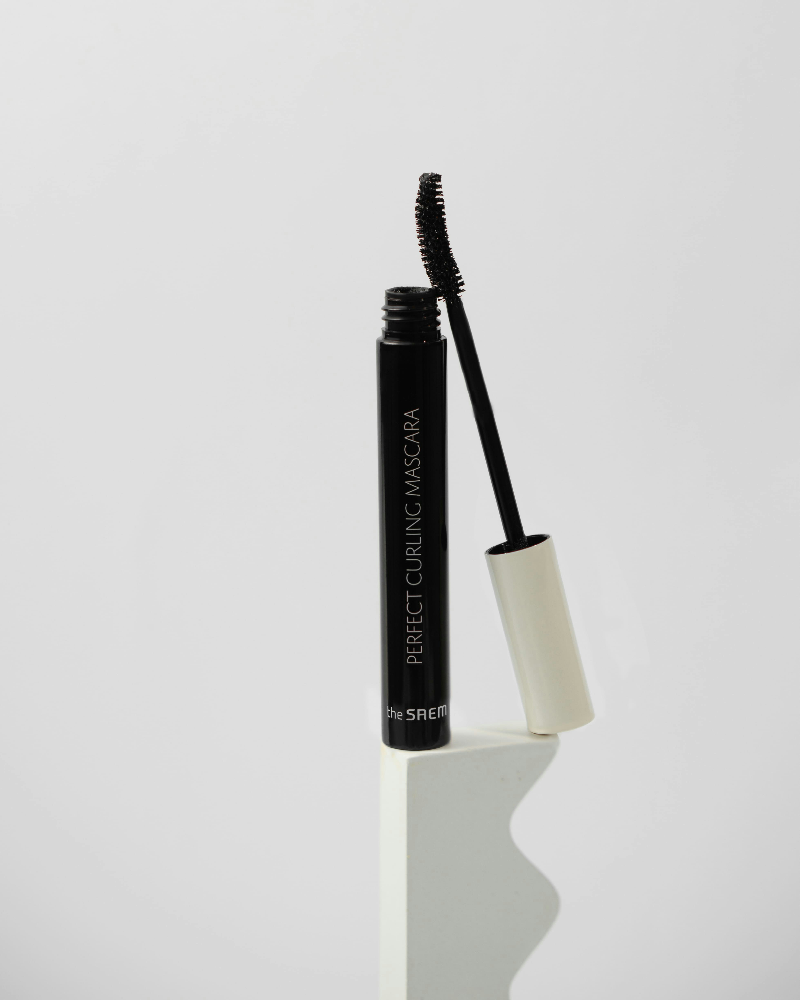

Procurando o batom ideal?
Cada tom de pele combina com um tipo de cor. Veja como escolher sem errar.
Ler mais
Observe o subtom da pele: em geral, peles de subtom quente combinam com corais e terracotas, e as de subtom frio, com rosados e vinhos. Teste o batom em luz natural, de preferência na própria pele, e não apenas na embalagem.

Pele com acabamento natural?
Menos produto e mais cuidado: o segredo de uma pele iluminada e leve.
Ler mais
Comece pela pele hidratada e com protetor solar. Use pouca base, aplicada com esponja levemente úmida, e corretivo só onde for preciso. O pó fica melhor em pequenas áreas, como a testa e o nariz.

Cílios marcantes sem exagero
Um passo a passo simples para uma máscara de cílios sem grumos.
Ler mais
Curve os cílios antes da máscara. Aplique da raiz às pontas, em zigue-zague, e espere secar um pouco antes da segunda camada. Se formar grumos, penteie os cílios com uma escovinha limpa.

Pínceis simples e leve para o cuidado do seu rosto
Ler mais
Cuide do seu rosto. Utllizando Pínceis e outros acessorios com total delicadeza